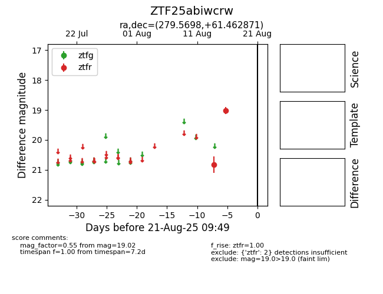

Target ZTF25abiwcrw at 2025-08-21 09:49, see:
FINK: fink-portal.org/ZTF25abiwcrw
Lasair: lasair-ztf.lsst.ac.uk/objects/ZTF25abiwcrw
ALeRCE: alerce.online/object/ZTF25abiwcrw
alt names
ZTF25abiwcrw (ztf,alerce)
coordinates:
equatorial (ra, dec) = (279.5698,+61.46287)
galactic (l, b) = (91.1364,+25.14960)
photometry
last ztfr=19.02
2 ztfr detections
